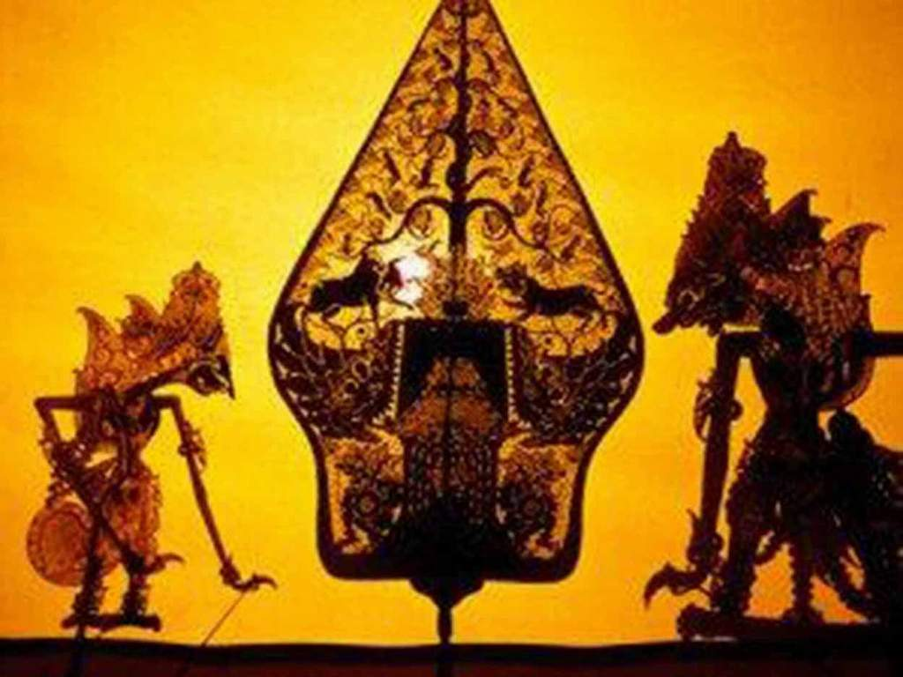
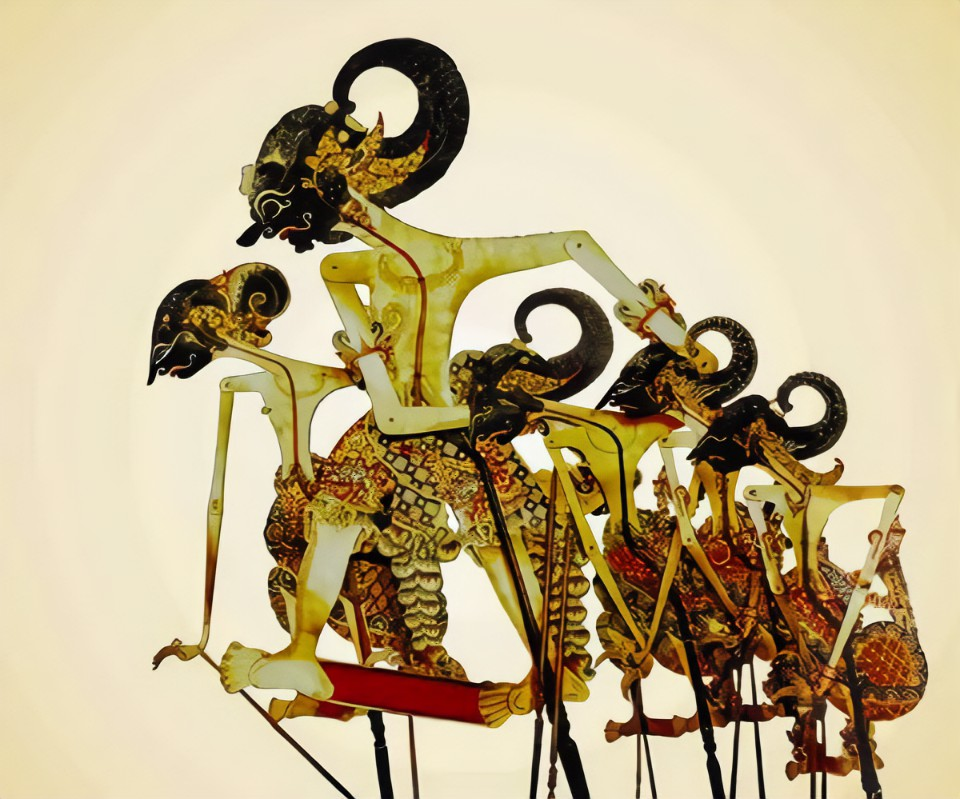

Materi Bahasa Jawa
Kelas 10 Semester 1
Ditulis : Yusar Brian Sadella, Tanggal : 18 Oktober 2023

Halaman ini berisi Rangkuman Materi dari Mata Pelajaran Bahasa Jawa Semester 1 dan ini akan berlanjut atau bersifat dinamis tergantung Pembelajaran yang didapat dari sang Penulis.Untuk Rangkuman Semester 2 Kelas 10 akan berlanjut nantinya, Jadi Untuk Sekarang Selamat Membaca yang ada.
| Bab | Judul Bab |
|---|---|
| 1 | Interprestasi Wayang dengan K3LH |
| 2 | Unggah Ungguh Basa |
Interprestasi Wayang dengan K3LH
*Gambar Keluarga Pandhawa
Dalam Cerita Perang Mahabarata terdapat 2 keluarga yang saling berselisih yaitu Pandhawa dan Kurawa,Mereka melakukan perselisihan karna terjadi pertentangan antar kedua keluarga yang saling memperebutkan takhta kerajaan.Disini kita berpusat pada Tokoh utama dalam cerita ini yaitu keluarga Pandhawa yang memiliki sifat yang suci dibandingkan keluarga kurawa yang semena-mena.
Sifat Utama Pandhawa dan Kaitannya dengan K3LH
- Puntadewa
- Werkudara
- Arjuna
- Nakula
- Sadewa
Sifat Utama Puntadewa yaitu Sabar,
Cara kita merealisasikan dengan K3LH yaitu kita harus sabar saat dalam melakukan kegiatan di lab sesuai K3LH agar tidak membahayakan diri kita dan orang lain
Sifat Utama Werkudara yaitu Berani,
Cara kita merealisasikan dengan K3LH dengan berani mengambil resiko di tempat kerja
Sifat Utama Arjuna yaitu Sopan Santun,
Cara kita merealisasikan dengan K3LH yaitu dengan bersikap,berbicara,dan berperilaku dengan Sopan dan Santun
Sifat Utama Nakula yaitu Ahli Membuat Obat obatan dan teliti.
Cara kita merealisasikan dengan K3LH yaitu Kita harus bekerja dengan teliti dan hati-hati agar pekerjaan terselesaikan tanpa ada kecelakaan pekerja.
Sifat Utama Sadewa yaitu Ahli dalam merancang strategi dengan teliti dan cermat.
Cara kita merealisasikan dengan K3LH yaitu sama seperti Nakula,Kita harus bekerja dengan teliti dan hati-hati agar pekerjaan terselesaikan tanpa ada kecelakaan pekerja
Unggah-Ungguh Basa

Unggah-Ungguh Basa yaitu Suatu Tatanan Basa yang digunakan berbicara kepada orang lain sesuai dengan kedudukan lawan bicara.Berikut merupakan Urutan dari yang terendah ke tertinggi :
- Ngoko Inggil
- Ngoko Alus
- Krama
- Krama Alus
Contoh Unggah-Ungguh Basa dengan Tabel
| No | Ngoko | Krama Lugu | Krama Alus |
|---|---|---|---|
| 1 | Tuku | Tumbas | Mundhut |
| 2 | Ndelok | Ningali | Mriksani |
| 3 | Aku | Kula | Dalem |
| 4 | Arep | Ajeng | Kersa |
| 5 | Mangan | Nedha | Dhahar |
| 6 | Adus | Adus | Siram |